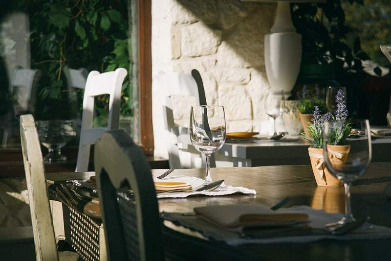

Our Story
Savora began as a twelve-seat counter where our family cooked whatever the morning market offered. Today the room is bigger, but the idea is the same: honest ingredients, cooked with care and shared generously.
We bake our bread every morning, roll pasta by hand and work with local growers, fishers and winemakers we know by name.
18
Years of cooking
120+
Seasonal dishes
4.9
Guest rating